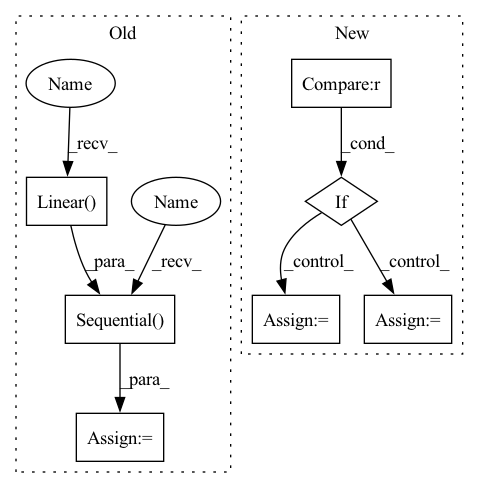

Pattern ID :30124
Before Change
assert image_height % patch_size == 0 and image_width % patch_size == 0, "Image dimensions must be divisible by the patch size."
num_patches = (image_height // patch_size) * (image_width // patch_size)
patch_dim = channels * patch_size * patch_size
self.to_patch_embedding = nn.Sequential(
Rearrange("b c (h p1) (w p2) -> b (h w) (p1 p2 c)", p1=patch_size, p2=patch_size),
nn.Linear( patch_dim, emb_dim),
)
//Embedding
self.cls_token = nn.Parameter(torch.randn(1, 1, emb_dim))
self.pos_embedding = nn.Parameter(torch.randn(1, num_patches + 1, emb_dim))
After Change
if type == "full":
self.head_depth = HeadDepth(resample_dim)
self.head_segmentation = HeadSeg(resample_dim, nclasses=nclasses)
elif type == "depth" :
self.head_depth = HeadDepth(resample_dim)
self.head_segmentation = None
else:
self.head_depth = None
self.head_segmentation = HeadSeg(resample_dim, nclasses=nclasses)
def forward(self, img):In pattern: SUPERPATTERN
Frequency: 3
Non-data size: 7
Instances Fragment ID: 89293842
Project Name: antocad/focusondepth
Commit Name: 705d8789c4e66dbdbfdd3aeb7f20666f019481dd
Time: 2022-01-03
Author: antoine.cadiou@icloud.com
File Name: FOD/FocusOnDepth.py
M Class Name: FocusOnDepth
N Class Name: FocusOnDepth
M Method Name: __init__(14)
N Method Name: __init__(12)
M Parent Class: nn.Module
N Parent Class: nn.Module
M File Name: FOD/FocusOnDepth.py
N File Name: FOD/FocusOnDepth.py
M Start Line: 38
M End Line: 69
N Start Line: 25
N End Line: 81
Before Change
self.deform_fc_channels = deform_fc_channels
if not no_trans:
self.offset_fc = nn.Sequential(
nn.Linear( self.out_size * self.out_size * self.out_channels,
self.deform_fc_channels) ,
nn.ReLU(inplace=True),
nn.Linear(self.deform_fc_channels, self.deform_fc_channels),
nn.ReLU(inplace=True),
nn.Linear(self.deform_fc_channels,
self.out_size * self.out_size * 2))
self.offset_fc[-1].weight.data.zero_()
self.offset_fc[-1].bias.data.zero_()
def forward(self, data, rois):After Change
seq = []
ic = self.out_size * self.out_size * self.out_channels
for i in range(self.num_offset_fcs):
if i < self.num_offset_fcs - 1 :
oc = self.deform_fc_channels
else:
oc = self.out_size * self.out_size * 2
seq.append(nn.Linear(ic, oc))
ic = oc
if i < self.num_offset_fcs - 1: Fragment ID: 89293843
Project Name: wxinlong/solo
Commit Name: 5fcec9ae4df1ecea8fe2a35d9635a3b081e297f7
Time: 2019-04-06
Author: chenkaidev@gmail.com
File Name: mmdet/ops/dcn/modules/deform_pool.py
M Class Name: DeformRoIPoolingPack
N Class Name: DeformRoIPoolingPack
M Method Name: __init__(11)
N Method Name: __init__(10)
M Parent Class: DeformRoIPooling
N Parent Class: DeformRoIPooling
M File Name: mmdet/ops/dcn/modules/deform_pool.py
N File Name: mmdet/ops/dcn/modules/deform_pool.py
M Start Line: 52
M End Line: 62
N Start Line: 47
N End Line: 68
Before Change
assert image_height % patch_size == 0 and image_width % patch_size == 0, "Image dimensions must be divisible by the patch size."
num_patches = (image_height // patch_size) * (image_width // patch_size)
patch_dim = channels * patch_size * patch_size
self.to_patch_embedding = nn.Sequential(
Rearrange("b c (h p1) (w p2) -> b (h w) (p1 p2 c)", p1=patch_size, p2=patch_size),
nn.Linear( patch_dim, emb_dim),
)
//Embedding
self.cls_token = nn.Parameter(torch.randn(1, 1, emb_dim))
self.pos_embedding = nn.Parameter(torch.randn(1, num_patches + 1, emb_dim))
After Change
if type == "full":
self.head_depth = HeadDepth(resample_dim)
self.head_segmentation = HeadSeg(resample_dim, nclasses=nclasses)
elif type == "depth" :
self.head_depth = HeadDepth(resample_dim)
self.head_segmentation = None
else:
self.head_depth = None
self.head_segmentation = HeadSeg(resample_dim, nclasses=nclasses) Fragment ID: 89293840
Project Name: antocad/focusondepth
Commit Name: 705d8789c4e66dbdbfdd3aeb7f20666f019481dd
Time: 2022-01-03
Author: antoine.cadiou@icloud.com
File Name: FOD/FocusOnDepth.py
M Class Name: FocusOnDepth
N Class Name: FocusOnDepth
M Method Name: __init__(14)
N Method Name: __init__(12)
M Parent Class: nn.Module
N Parent Class: nn.Module
M File Name: FOD/FocusOnDepth.py
N File Name: FOD/FocusOnDepth.py
M Start Line: 38
M End Line: 69
N Start Line: 25
N End Line: 81
Before Change
input_channels = dataset.shape[1]
num_output = dataset.num_classes
if lenet_quantized:
self._model = nn.Sequential(
nn.Conv2d(input_channels, self.num_channels_conv, kernel_size=5),
self.activation_function(),
nn.MaxPool2d(2, 2),
nn.BatchNorm2d(self.num_channels_conv),
QConv2d(
self.num_channels_conv,
self.num_channels_conv,
kernel_size=5,
input_quantization="sign",
weight_quantization="weightdorefa"),
nn.BatchNorm2d(self.num_channels_conv),
nn.MaxPool2d(2, 2),
ShapePrintDebug(),
nn.Flatten(),
QActivation(activation="sign"),
QLinear(self.num_channels_conv * 4 * 4,
self.num_fc, weight_quantization="sign"),
nn.BatchNorm1d(self.num_fc),
self.activation_function(),
nn.Linear( self.num_fc, num_output),
)
else:
self._model = nn.Sequential(
nn.Conv2d(input_channels, self.num_channels_conv, kernel_size=5),
nn.BatchNorm2d(self.num_channels_conv),After Change
super(LeNet, self).__init__(dataset)
self.input_channels = dataset.shape[1]
self.num_output = dataset.num_classes
if lenet_version == 0 :
self._model = self.generate_quant_model("sign", "sign")
elif lenet_version == 1:
self._model = self.generate_quant_model("weightdorefa", "weightdorefa")
elif lenet_version == 2:
self._model = self.generate_quant_model("sign", "weightdorefa", weight_quant_2="sign")
elif lenet_version == 3:
self._model = self.generate_quant_model("sign", "weightdorefa")
else:
self._model = nn.Sequential(
nn.Conv2d(self.input_channels, self.num_channels_conv, kernel_size=5), Fragment ID: 89293846
Project Name: hpi-xnor/bitorch
Commit Name: 3e39cbdcc82f8070eb61e0374a208a405abbd8cb
Time: 2022-05-18
Author: christopher.aust@student.hpi.uni-potsdam.de
File Name: bitorch/models/lenet.py
M Class Name: LeNet
N Class Name: LeNet
M Method Name: __init__(3)
N Method Name: __init__(3)
M Parent Class: Model
N Parent Class: Model
M File Name: bitorch/models/lenet.py
N File Name: bitorch/models/lenet.py
M Start Line: 24
M End Line: 74
N Start Line: 57
N End Line: 88